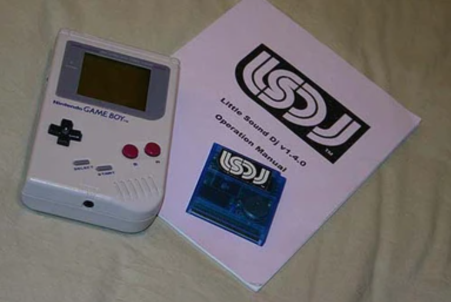
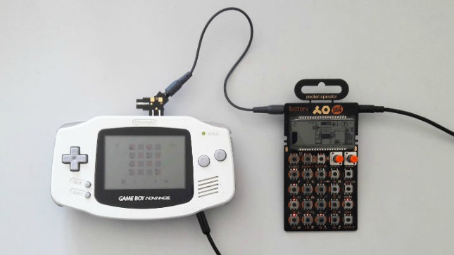
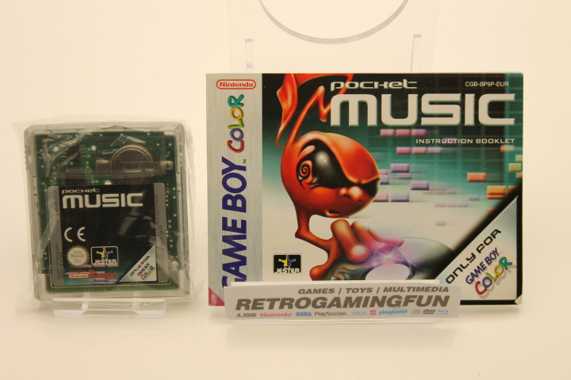

Game Boy Music Tools
There were several Game Boy DAWs/Synthesizers released in the early 2000s, some homebrew and some officially licensed by Nintendo. These tiny games actually helped build the chiptune and portable music production scene. Here are three of the most notable titles.

Little Sound DJ (LSDJ)
Game Boy
One of the most iconic music trackers, and is widely used in the chiptune community.
Read more →
Nanoloop
Game Boy Advance
A minimalist, portable sequencer for chiptune production on the GBA.
Read more →
Pocket Music
Game Boy Color
A Sample-based music maker for Game Boy Color with grid sequencing and looping
Read more →